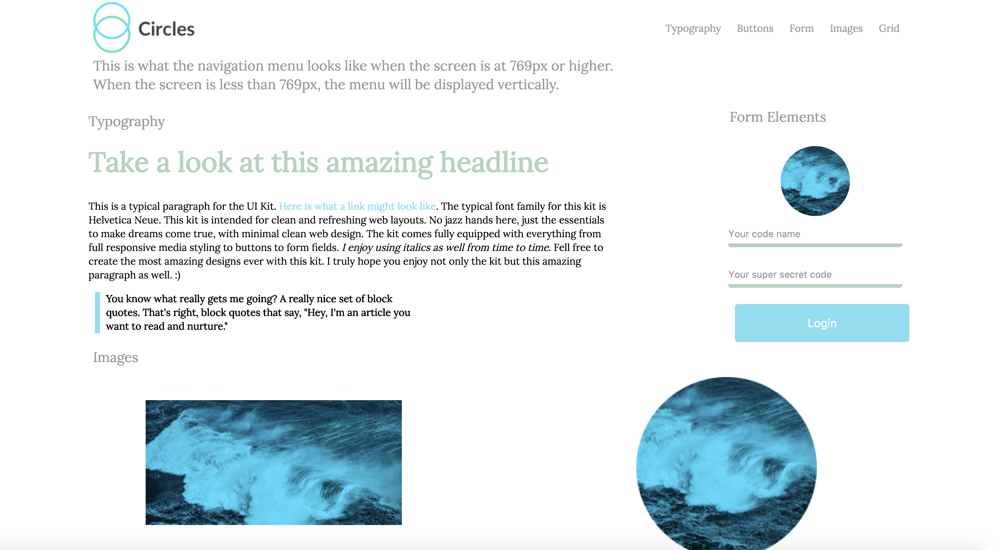

Random User AJAX
Skills Used: AJAX, HTML, CSS and jQuery.
This is a web app using custom jQuery to create a lightbox and retrieve random users from an API using AJAX.

Lightbox Photo Gallery
Skills Used: jQuery, HTML, and CSS
This is a web app using a jQuery plugin for a lightbox to display local photos and their captions while also filtering them.

WebApp Dashboard
Skills Used: jQuery, HTML, and CSS
This is a simple website using the skills listed above to create a webapp dashboard.

SVG Project
Skills Used: HTML and CSS
This was a simple project working with Scalable Vector Graphics (SVG's) using a little CSS to create what you see.

Style-Guide Project Website
Skills Used: HTML and SCSS
Here is a simple style guide website using SCSS.
Video-Player Project
Skills Used: JavaScript, HTML and CSS
This is a website that simply has a video and transcript and uses JavaScript and the MEJS plugin and highlighs the sentence as she speaks.